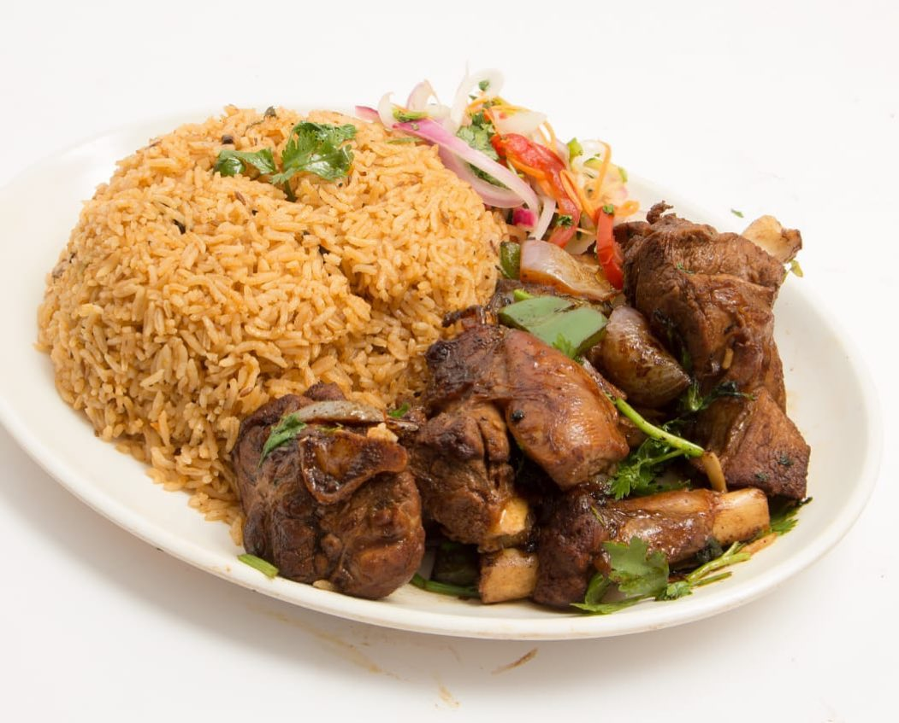

Pilau Arosto

Have Some Fun With Pilau & Goat Meat
Pilau Arosto is a flavorful East African dish combining the rich, spiced rice of pilau with succulent roasted meat.
This dish, often enjoyed during festive occasions and family gatherings, showcases the region's penchant for vibrant flavors and hearty ingredients. The pilau, infused with a blend of spices like cumin, cinnamon, and cardamom, complements the tender, marinated meat, creating a harmonious symphony of taste and texture. Whether served at a special celebration or a comforting family meal, Pilau Arosto embodies the essence of East African cuisine, bringing warmth and joy to every table.
Ingredients
- Pilau
- 2 cups basmati rice
- 2 tablespoons vegetable oil
- 2 large onions, thinly sliced
- 4 garlic cloves, minced
- 1 tablespoon fresh ginger, minced
- 2-3 tablespoons pilau masala (a blend of spices such as cumin, cinnamon, cloves, black pepper, and cardamom)
- 1 teaspoon ground coriander
- 1 teaspoon ground turmeric
- 1 teaspoon ground cumin
- 2 large tomatoes, chopped
- 4 cups beef or chicken broth (or water)
- Salt to taste
- Arosto (Roast Meat)
- 1 kg beef or goat meat, cut into large chunks
- 2 tablespoons vegetable oil
- 2 large onions, sliced
- 4 garlic cloves, minced
- 1 tablespoon fresh ginger, minced
- 1 teaspoon ground coriander
- 1 teaspoon ground cumin
- 1 teaspoon paprika
- 1-2 teaspoons pilau masala
- Salt to taste
- Juice of 1 lemon
Steps
- Prepare the Rice: Rinse the basmati rice under cold water until the water runs clear. Soak the rice in water for about 30 minutes, then drain.
- Cook the Spices: Heat the vegetable oil in a large pot over medium heat. Add the sliced onions and cook until golden brown, stirring occasionally.
- Add Aromatics: Add the minced garlic, ginger, and green chilies (if using). Cook for about 2 minutes until fragrant.
- Add Spices: Stir in the pilau masala, ground coriander, ground turmeric, and ground cumin. Cook for another 2 minutes.
- Cook Tomatoes: Add the chopped tomatoes and cook until they soften and blend with the spices.
- Add Rice and Broth: Add the drained rice to the pot and stir well to coat with the spice mixture. Pour in the broth or water, and add salt to taste. Bring to a boil.
- Simmer: Reduce the heat to low, cover the pot, and let it simmer for about 20-25 minutes, or until the rice is cooked and the liquid is absorbed. Do not uncover the pot during this time.
- Fluff and Serve: Once cooked, fluff the rice with a fork and set aside.
- Marinate the Meat: In a bowl, combine the meat chunks with vegetable oil, minced garlic, ginger, ground coriander, ground cumin, paprika, black pepper, pilau masala, salt, and lemon juice. Mix well to coat the meat. Let it marinate for at least 30 minutes, or overnight in the refrigerator for best results.
- Roast the Meat: Preheat the oven to 180°C (350°F). Spread the marinated meat on a roasting pan. Add the sliced onions on top.
- Cook: Roast the meat in the preheated oven for about 1 to 1.5 hours, or until the meat is tender and browned, turning occasionally to ensure even cooking.
- Serve: Serve the roasted meat alongside the pilau rice.